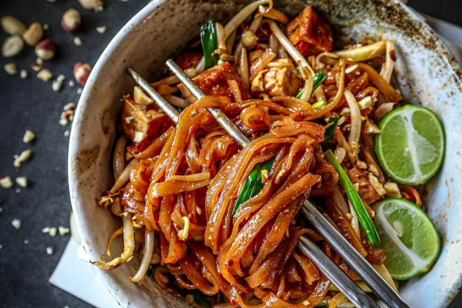

Pad Thai

Pad Thai Uppskrift
Pad Thai er þjóðarréttur Tælendinga, rétturinn er vanalega ekki vegan en í þessari
uppskrift munum við sleppa að nota allar dýraafurðir til þess að hafa réttinn vegan.
Þetta er bragðmikill réttur framreiddur með pönnusteiktum jarðhnetum, stökku tófú og safa úr nýkreistri límónu.
Það tekur um 30 min að búa til réttinn og á að duga fyrir tvo.
Hráefni
- 2 msk grænmetisolía
- 150 grömm hrísgrjónanúðlur
- 130 grömm baunaspírur
- 2 vorlaukar, skorið í sneiðar
- 2 msk púðusykur
- 1 skarlottulaukur, saxað smátt
- 3 hvítlauksgeirar, saxað smátt
- 2 stykki þurrkaður chili pipar, fjarlægja fræ og skorið í þunnur sneiðar
- 100 grömm tófú
- 2 msk pönnusteiktar hnetur, skorið í smátt
Sósa
- 1 msk ljós sojasósa
- 1 msk dökk sojasósa
- 2 msk tamarindmauk
- 1 msk ljósbrúnt miso
- 2 msk sriracha
- 1 teskeið af doubanjiang
- 2 msk volgt vatn
Leiðbeiningar
- Elda núðlurnar: Helltu sjóðandi heitu vatni yfir núðlurnar og láttu þær liggja í
vatninu í 4-5 min eða þangað til þær eru orðnar mjúkar(en ekki fulleldaðar)
- Búa til sósuna: Blandaðu miso maukið við vatnið svo að það sé léttara að blanda
maukið við hin hráefnin, bættu restina af hráefnunum við og blandaðu öllu saman.
- Elda tófúið: Reyndu að ná eins miklu vatni úr tófú stykkinu eins og þú getur,
skerðu það síðan í litla kubba. Settu olíu á pönnu og stilltu á miðlungs háan hita, settu tófú
kubbuna á pönnuna þegar hún er orðin heit.
- Elda pad thai réttinn: Settu olíu á non-stick pönnu eða wok pönnu á miðlungs háan
hita. Settu hvítlaukinn, skarlottulaukinn og þurrkaða chili piparinn á pönnuna og leyfðu
því að steikja í sirka 2 min. Bættu síðan púðursykrinum og steikta tófúinu við,
eldaðu þetta þangað til sykurinn karamelliseraður, í kringum 1-2 min.
Bættu síðan sósunni og síðan núðlunum. Blandaðu þessu vel saman og passaðu að núðlurnar
festist ekki saman.
- Klára réttinn: Smakkaðu núðlurnar til að sjá hvort þær séu nógu eldaðar,
ef þær eru ekki nógu eldaðar bættu þá 2 msk af vatni á pönnuna og haltu áfram að elda þangað
til vantið gufar upp. Þegar þér finnst núðlurnar vera tilbúnar taktu þá pönnuna af hellunni,
bættu baunaspírunum og vorlauknum og blandaðu vel svo að grænmetið eldist eitthvað smá.
Þegar rétturinn er alveg tilbúinn bættu þá hnetunum við.